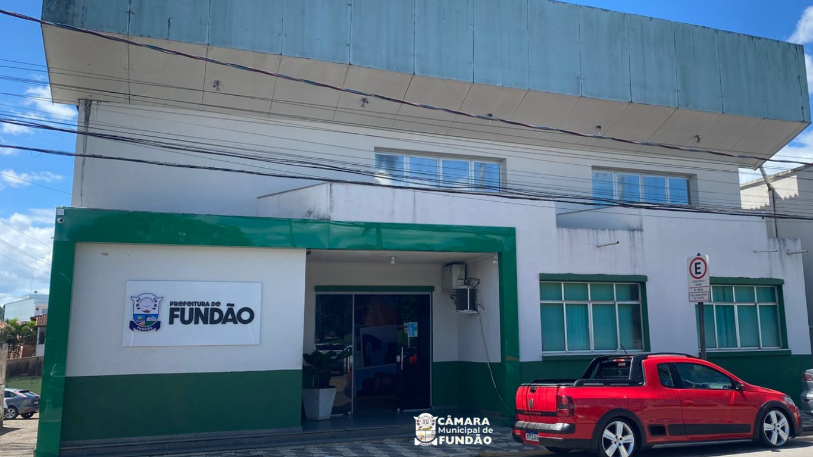
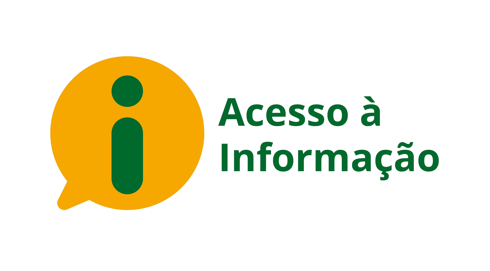

O que é a Câmara Municipal?
Conheça a instituição que representa os cidadãos, cria leis para o município e fiscaliza as ações da Prefeitura.
Ler maisPolíticas públicas explicadas de forma simples, clara e acessível para todo cidadão. Conheça seus representantes, seus direitos e como participar.
O Câmara Explica é um blog educativo da Câmara Municipal de Fundão, criado para tornar a política municipal mais acessível para os cidadãos.
Aqui você irá encontrar explicações claras sobre o funcionamento de uma Câmara Municipal, com linguagem simples e conteúdos confiáveis que ajudam a compreender melhor o papel do Poder Legislativo e sua importância para o município.

Conheça a instituição que representa os cidadãos, cria leis para o município e fiscaliza as ações da Prefeitura.
Ler maisConheça as funções, os poderes e as obrigações de quem você elegeu para representar sua cidade.
Ler maisAcompanhe o caminho de uma proposta, desde sua apresentação até a aprovação e transformação em uma lei municipal.
Ler mais
Acompanhe como os recursos públicos são utilizados e tenha acesso a informações importantes sobre a gestão municipal.
Ler maisConheça os setores que trabalham diariamente para manter a Câmara funcionando todos os dias.
Ler maisTem dúvidas, sugestões ou quer participar das Sessões? Acesse nossos canais de contato e participe.
Ler mais